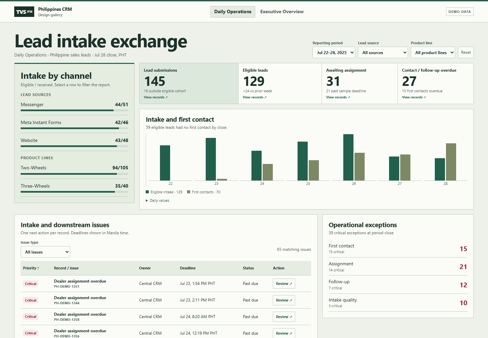
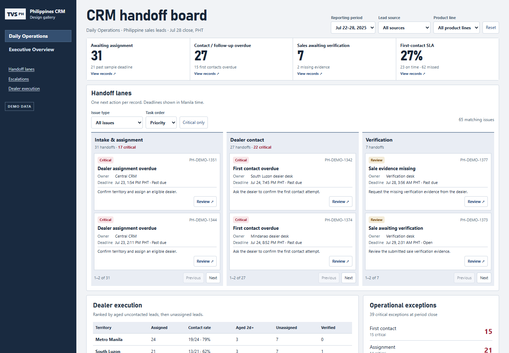
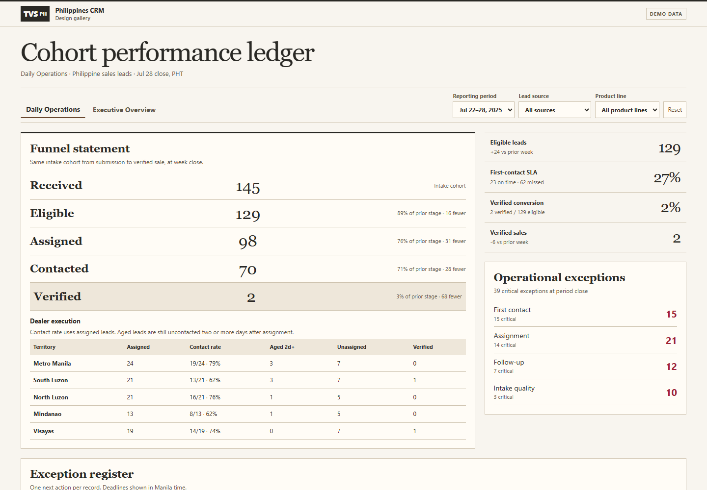
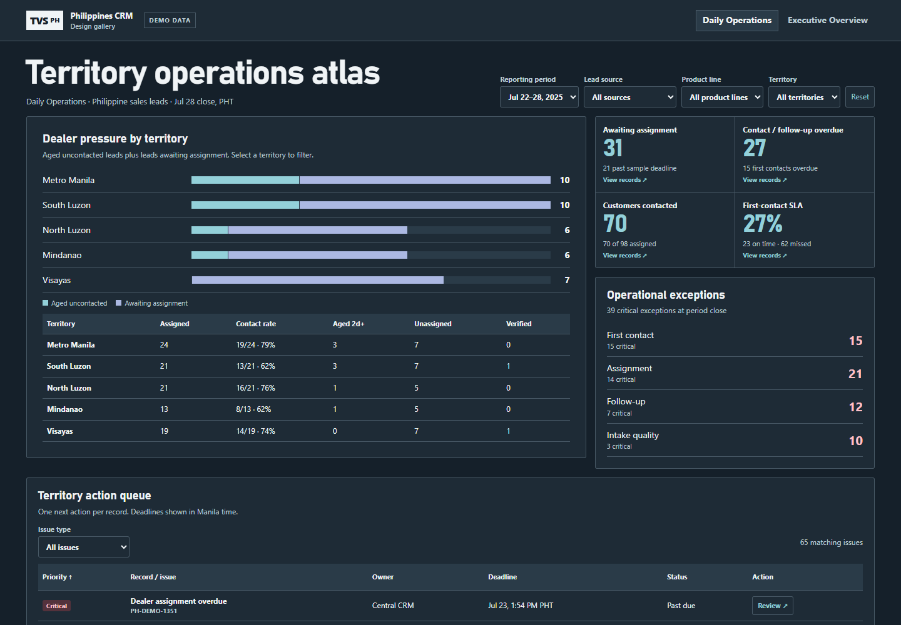
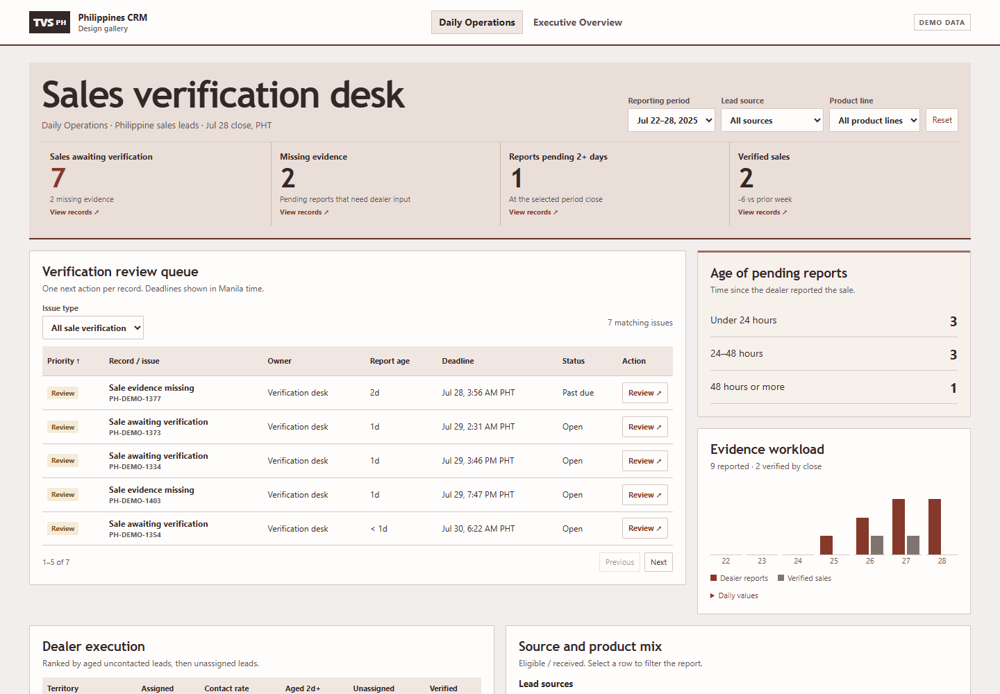
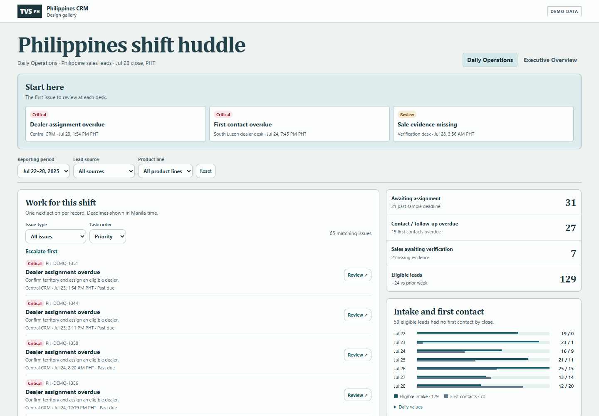

Intake Exchange
See what entered the pipeline
Channel-first intake board, side-by-side arrival and contact, and a quality queue.
- Density
- Moderate
- Best for
- CRM teams reviewing acquisition and intake quality
Six approaches to running Philippine sales operations. Each offers Daily Operations and Executive Overview, backed by the same synthetic lead records.

See what entered the pipeline
Channel-first intake board, side-by-side arrival and contact, and a quality queue.

Move work between responsible teams
Stage lanes, ownership states, and a queue grouped by desk.

Account for every stage of the funnel
Audit-style funnel statement, matched denominators, and a sortable exception register.

Find where execution needs support
Ranked territory strips, a dealer execution table, and territory-aware queue filtering.

Bring evidence and aging into the decision
Pending-evidence breakdown, aging bands, and an evidence-first review queue.

Agree on the next actions together
Priorities and owners first, followed by lead flow and compact weekly outcomes.
Open two interactive previews at the same width. Each panel has independent filters.